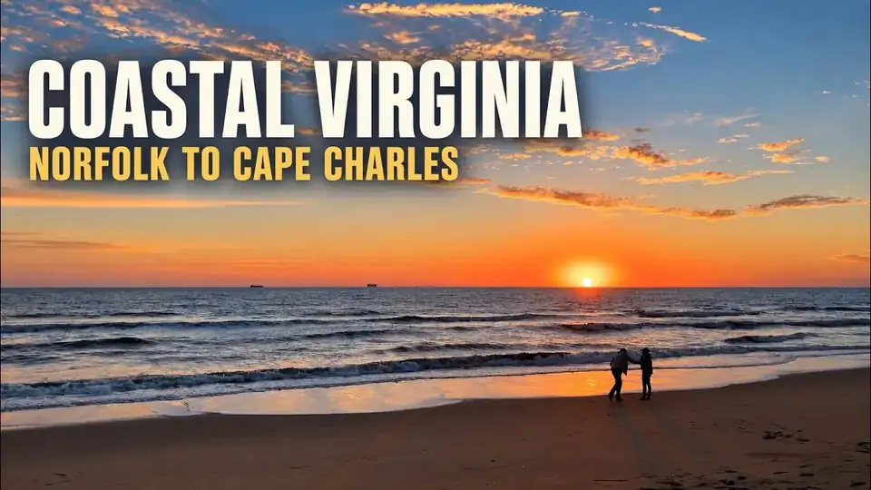

Destination
Southeast & Mid-Atlantic
Virginia’s coast and historic country, the Carolinas, Georgia, Alabama, a Key West journey, and a 2014 throwback to Gatlinburg.
Films
Subscribe on YouTube
Watch these films, and new ones as they are published, on the Totin My Pack channel.